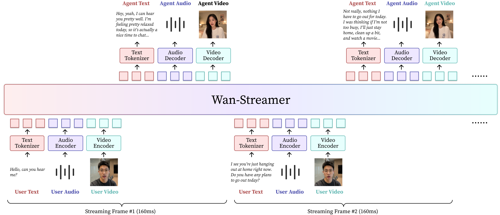
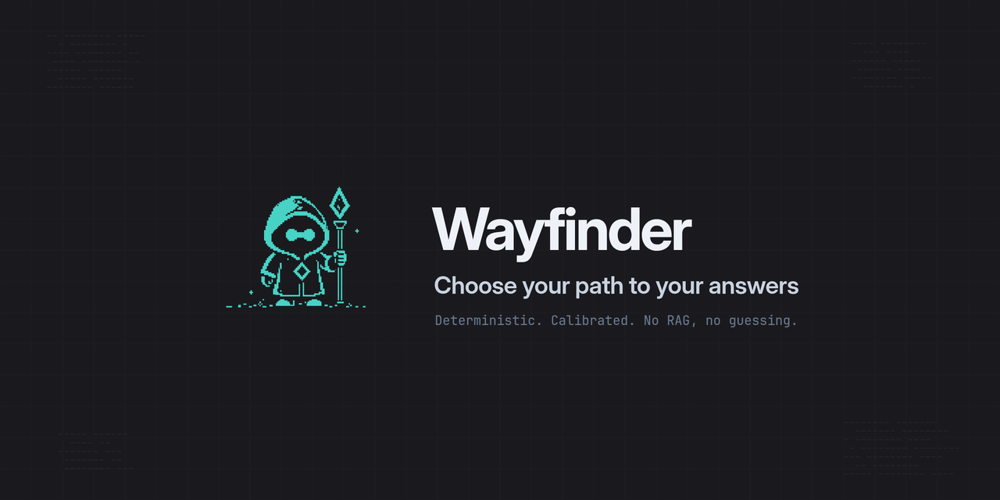

THE FRONT PAGE
EDITOR'S NOTE: A busy day in the latent space. #Judgment and craft
The U.S. military is increasing its reliance on machine learning models to identify battlefield targets, accelerating processing times while introducing severe verification risks. This shift forces a uneasy tradeoff between operational speed and the rigorous verification traditionally required by software craft in high-stakes environments.
A misdiagnosis of brain cancer that turned out to be a parasitic worm infection underscores the limits of probabilistic models in medicine. For systems trained on statistical likelihood, rare anomalies present a persistent risk of false positives that require strict human oversight to catch.
By engineering pixels that simultaneously emit and analyze light, researchers have bypassed the traditional physical separation of screen and sensor. This consolidation simplifies hardware architecture but introduces severe calibration challenges, as continuous background sensing risks degrading long-term display uniformity.

By collapsing traditional pipeline layers into an end-to-end streaming architecture, this release achieves sub-second interactive latencies for generative models. The engineering tradeoff is severe: developers trade clean, deterministic state boundaries for a complex, non-blocking orchestration layer that is notoriously difficult to debug.
By executing lower-cost draft tokens ahead of the main model, DSpark attempts to bypass the memory bandwidth bottlenecks that make LLM inference painfully slow. The risk is a fragile architecture that burns extra compute cycles whenever the speculator guesses wrong, turning efficiency into waste.
A new utility targets the clunky reality of running background local models on consumer hardware, keeping clamshell Macs awake only for active compute tasks. While it solves immediate developer friction, relying on continuous lid-closed execution introduces nontrivial risks of thermal throttling and accelerated battery degradation under heavy inference loads.

The newly released Wayfinder Router attempts to enforce deterministic logic when splitting queries between local and hosted language models, offering predictable execution paths at the cost of rigid, non-adaptive request handling. It reflects a growing industry exhaustion with probabilistic orchestration layers, though its reliance on static rule sets may struggle under shifting semantic workloads.
MODEL RELEASE HISTORY
No confirmed model releases were detected for this edition date.